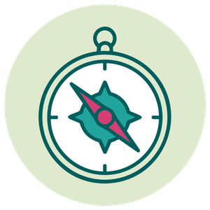

Wozu dient diese Karte?


Unsichtbares sichtbar machen, Brücken bauen
Sichtbar machen
Die nationalen, kantonalen und lokalen Akteur:innen der Ernährungsbildung ins Licht rücken.
Synergien schaffen
Komplementaritäten und Möglichkeiten der Zusammenarbeit zwischen bestehenden Initiativen erkennen.

Sich orientieren
Sich in der Landschaft verorten, bevor neue Projekte lanciert werden.
Wirksamer kommunizieren
Die richtige Botschaft an die Akteur:innen richten, die wirklich betroffen sind.